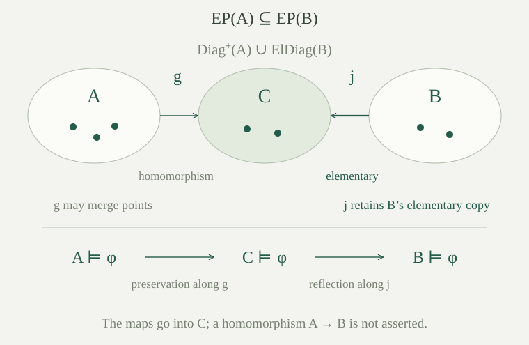

Fix an arbitrary set-sized first-order language \(L\) with equality. All structures here are nonempty, and we work classically with choice. A homomorphism \(h:M\to N\) is a function between \(L\)-structures such that, for every function symbol \(f\) of arity \(k\) and every tuple \(\bar a\in M^k\),
and, for every relation symbol \(R\) of arity \(k\),
Constants are nullary function symbols, so their condition is \(h(c^M)=c^N\). A nullary relation, if present, is a sentence whose truth must pass forward. No injectivity or reflection of relations is required. By comparison, an embedding is an injective homomorphism that also reflects every relation.
For a language with one binary relation \(E\), think of structures as directed graphs in which loops are allowed. A homomorphism sends every directed edge to an edge; vertices may merge, and the target can have additional edges.
If \(h:M\to N\) is a homomorphism, \(t(\bar x)\) is an \(L\)-term, and \(\bar a\) assigns its variables in \(M\), then
Consequently, every atomic formula true at \(\bar a\) in \(M\) is true at \(h(\bar a)\) in \(N\).
Induct on the term. For a variable this is the definition of the transported assignment. For \(t=f(t_0,\ldots,t_{k-1})\), apply the homomorphism identity for \(f\) to the values of the subterms, then substitute the induction hypotheses for those values. The same argument includes \(k=0\), with no subterm hypotheses.
For an equality \(s=t\), equal values in \(M\) have equal images under the function \(h\); the term identities identify those images with the target values. For \(R(t_0,\ldots,t_{k-1})\), use the relation-preservation condition and then the term identities. Thus equality passes forward without requiring that \(h\) be injective.
Let \(A\) have vertices \(0,1\) and just the edge \(0\to1\). Let \(B\) have one vertex \(*\) with a loop. Is the map sending both vertices to \(*\) a homomorphism? Which of \(x=y\), \(x\ne y\), and \(\neg E(x,y)\) does this example allow to fail under transport?
The only source edge goes to the loop, so the map is a homomorphism. At \((0,1)\), the true inequality becomes false. At \((0,0)\), the true assertion \(\neg E(x,y)\) also becomes false, since its image is the loop. An equality that is true in the source remains true, as any function sends equal inputs to equal outputs.
Failure of reflection does not require collapsing vertices. The identity map from a one-vertex graph without a loop to a one-vertex graph with a loop is injective and preserves every source edge vacuously. It is a homomorphism, but the target loop has no source counterpart. Thus even an injective homomorphism need not be an embedding.
An existential-positive formula is built from atomic \(L\)-formulas, including equalities, and the constants \(\top,\bot\), using finite conjunction, finite disjunction, and existential quantification. The notation includes formulas with free variables and sentences with none. It excludes negation, implication and universal quantification as construction rules.
Empty conjunction means \(\top\), and empty disjunction means \(\bot\). Finite conjunctions and disjunctions of existential-positive formulas stay in this class simply by its definition. So does an existential closure, meaning the result of existentially quantifying all variables in a given finite list.
For example, \(\exists z\,(E(x,z)\land E(z,y))\) asks for a directed walk of length two from \(x\) to \(y\). It does not require the three vertices to be distinct. Adding inequalities to demand distinctness would leave the displayed syntactic class.
This definition concerns how a formula is written. A formula with other connectives may still be equivalent to an existential-positive one; equivalence asks for identical truth values in every nonempty structure at every assignment.
Let \(h:M\to N\) be a homomorphism and let \(\theta(\bar x)\) be existential-positive. For every tuple \(\bar a\) in \(M\),
Induct on the construction of \(\theta\), allowing any assignment of all its free variables. Atomic formulas are handled by . The assertion for \(\top\) is immediate; there is no source assignment satisfying \(\bot\).
For a conjunction, both source formulas hold, so both target formulas hold by induction. For a disjunction, choose a disjunct that holds in the source and apply its induction hypothesis; this gives the target disjunction.
If \(M\models\exists y\,\psi[\bar a]\), choose its particular witness \(b\in M\). Induction gives \(N\models\psi[h(\bar a),h(b)]\). The element \(h(b)\), rather than a newly chosen unrelated point, is the required target witness. This proves the quantified case and completes the induction.
In the language with a constant \(0\) and unary function \(s\), interpret both structures by \(\mathbb N\), with \(s(n)=n+1\). The map \(h(n)=n+1\) commutes with \(s\). Is it a homomorphism? What fails if the constant condition is omitted?
It is not a homomorphism in this language, because \(h(0)=1\ne0\). Although \(h(s(n))=n+2=s(h(n))\), commuting with the positive-arity functions alone is insufficient.
The atomic formula \(x=0\) is true at \(x=0\) in the source and false at its image \(1\). The missing nullary-function condition is exactly what breaks the atomic preservation proof. If the constant symbol is removed from the language, this same map is a homomorphism of the remaining successor structures.
Use the language \(L(M)\) with a fresh name \(c_a\) for every \(a\in M\), and its canonical expansion \(M_M\). The positive atomic diagram is
This is the positive diagram from the question about omitting negative facts. It contains the true function identities \(f(c_{\bar a})=c_{f^M(\bar a)}\), including \(c=c_{c^M}\) for original constants, and every true relation instance. It contains no inequalities and no negated relation instances.
For an \(L(M)\)-structure \(N^*\), write \(N\) for its reduct to \(L\) and \(h_{N^*}(a)=c_a^{N^*}\) for its canonical map. Different names can have the same interpretation.
An \(L(M)\)-structure \(N^*\) satisfies \(\operatorname{Diag}^{+}(M)\) if and only if its particular canonical map \(h_{N^*}:M\to N\) is a homomorphism. Equivalently, a specified function \(h:M\to N\) is a homomorphism if and only if interpreting every \(c_a\) by \(h(a)\) makes \(N\) a model of that diagram.
Suppose the diagram holds. Its function identity for \(f\) and \(\bar a\), interpreted in \(N^*\), says \(f^N(h_{N^*}(\bar a))=h_{N^*}(f^M(\bar a))\). This includes original constants. Whenever \(R^M(\bar a)\) holds, its named atomic sentence belongs to the diagram, so \(R^N(h_{N^*}(\bar a))\) holds. These are precisely the homomorphism conditions.
Conversely, every atomic sentence of the diagram can be obtained from an atomic \(L\)-formula by substituting finitely many old-element names. Repeated appearances of the same name use the same variable. Truth in \(M_M\) is truth of that formula at the named tuple in \(M\). Atomic preservation along \(h_{N^*}\) gives its truth at the image tuple in \(N\); the substitution rule gives truth of the named sentence in \(N^*\). Thus every diagram sentence holds.
When the interpretation of each \(c_a\) is prescribed as \(h(a)\), the canonical map is exactly the supplied \(h\). This proves the last equivalence without imposing injectivity.
Let \(\Delta\subseteq\operatorname{Diag}^{+}(A)\) be finite. List the distinct added names occurring in it as \(c_{a_0},\ldots,c_{a_{r-1}}\). There is a positive quantifier-free \(L\)-formula \(\delta(\bar y)\), a finite conjunction of atoms, such that \(\exists\bar y\,\delta(\bar y)\) is true in \(A\). A nonempty \(L\)-structure \(B\) satisfies this existential-positive sentence exactly when these finitely many added names can be interpreted in \(B\) so that all of \(\Delta\) holds.
Conjoin the atomic sentences of \(\Delta\) and replace each distinct added name by its own fresh variable. Original language symbols, including original constants, stay unchanged. The resulting \(\delta\) is a conjunction of atomic \(L\)-formulas. The tuple \(\bar a\) witnesses it in \(A\).
If a tuple \(\bar b\) satisfies \(\delta\) in \(B\), interpret \(c_{a_i}\) by \(b_i\). Substitution makes all the selected sentences true. Conversely, interpretations making the selected sentences true give just such a tuple. Any names not occurring in \(\Delta\) can be assigned an arbitrary fixed element of \(B\).
If \(\Delta\) is empty, use \(\delta=\top\) and the empty tuple. If its sentences use no added names, leave their atoms unchanged and use an empty quantifier list. These cases give the same equivalence.
The existential-positive theory of a structure \(A\), written \(\operatorname{EP}(A)\), is the set of existential-positive \(L\)-sentences true in \(A\). Thus
means that every such sentence true in \(A\) is true in \(B\). The direction is intentional: a homomorphism \(A\to B\) gives this inclusion by . Equality of the full theories of \(A\) and \(B\) is a much stronger requirement.
For nonempty \(L\)-structures \(A,B\), the inclusion \(\operatorname{EP}(A)\subseteq\operatorname{EP}(B)\) holds if and only if there are a nonempty structure \(C\), an elementary embedding \(j:B\to C\), and a homomorphism \(g:A\to C\).
For the forward direction, give \(A\) names \(c_a\) and \(B\) names \(d_b\), using disjoint families even if the carriers overlap. In the common expanded language form
Each diagram is carried into that common language, and no equation identifies names from the two families. Consider a finite fragment. Let \(\Delta\) be its selected positive \(A\)-diagram sentences, and retain its finitely many \(B\)-diagram sentences. By , the first selection is described by a sentence \(\exists\bar y\,\delta(\bar y)\) in \(\operatorname{EP}(A)\). It therefore holds in \(B\). Choose a witnessing tuple in \(B\).
Expand the original structure \(B\): interpret every \(d_b\) by \(b\), and the finitely many mentioned \(c_a\) by the chosen tuple. Interpret the remaining \(A\)-names arbitrarily. The canonical \(B\)-names satisfy every selected elementary-diagram sentence, while the witnesses satisfy \(\Delta\). Disjointness of the name families lets these interpretations coexist. This proves finite satisfiability, including fragments in which either selection is empty.
Compactness in arbitrary set-sized languages supplies a model of the whole union. Let \(C\) be its \(L\)-reduct. Define \(g(a)=c_a^C\) and \(j(b)=d_b^C\), reading constants in the expanded model. The makes this \(g\) a homomorphism; the elementary diagram lemma makes this \(j\) elementary. The expanded language is set-sized but need not be countable.
Conversely, an existential-positive sentence true in \(A\) passes along \(g\) to \(C\). Elementarity of \(j\) reflects that sentence to \(B\). This proves exactly the stated inclusion.
After renaming the elementary copy, one may regard \(C\) as an elementary extension of \(B\). The lemma asks for a homomorphism into that extension, not necessarily into \(B\) itself.
An \(L\)-sentence \(\varphi\) is preserved under homomorphisms if, for every homomorphism \(h:A\to B\) between nonempty \(L\)-structures,
The quantifiers include infinite structures and nonsurjective maps. No background theory restricts the source or target. Every existential-positive sentence has this property by .
For an \(L\)-sentence \(\varphi\), its existential-positive consequences form the set
Semantic consequence here ranges over all nonempty \(L\)-structures. Every model of \(\varphi\) satisfies all of \(\Gamma_\varphi\). A finite disjunction of its possible positive consequences is existential-positive, as is a finite conjunction; the empty cases are \(\bot\) and \(\top\).
If \(\varphi\) is preserved under homomorphisms, then every nonempty \(B\models\Gamma_\varphi\) satisfies \(\varphi\).
Form the theory
It is satisfiable. Otherwise compactness gives finitely many excluded sentences \(\theta_1,\ldots,\theta_r\) for which \(\{\varphi,\neg\theta_1,\ldots,\neg\theta_r\}\) has no model. Thus
The displayed disjunction is existential-positive and belongs to \(\Gamma_\varphi\). Since \(B\models\Gamma_\varphi\), it is true in \(B\); yet every selected disjunct is false there. If \(r=0\), the same contradiction uses \(\bot\in\Gamma_\varphi\). This proves satisfiability of \(V\).
Choose \(A\models V\). Then \(A\models\varphi\), and \(\operatorname{EP}(A)\subseteq\operatorname{EP}(B)\): whenever an existential-positive sentence is false in \(B\), its negation was imposed on \(A\), so it cannot be true there.
Apply to obtain a homomorphism \(g:A\to C\) and an elementary embedding \(j:B\to C\). Preservation of \(\varphi\) along \(g\) gives \(C\models\varphi\). Elementarity of \(j\) then gives \(B\models\varphi\), as required. The homomorphism goes from the model where \(\varphi\) is already known to the elementary extension of the model where it must be proved.

For a sentence \(\varphi\) in any set-sized first-order language with equality, the following are equivalent: \(\varphi\) is preserved under all homomorphisms between nonempty structures; and \(\varphi\) is equivalent, in all nonempty structures, to an existential-positive sentence.
If \(\varphi\) is equivalent to an existential-positive sentence, transport truth of that sentence by and use the equivalence in both structures.
Conversely, suppose \(\varphi\) is preserved. By , the theory \(\Gamma_\varphi\cup\{\neg\varphi\}\) has no nonempty model. Compactness yields a finite \(\Gamma_0\subseteq\Gamma_\varphi\) with \(\Gamma_0\models\varphi\). Let \(\theta\) be the conjunction of its members, taking \(\theta=\top\) if \(\Gamma_0\) is empty. This is an existential-positive sentence.
Its construction gives \(\theta\models\varphi\). Conversely, the definition of \(\Gamma_\varphi\) gives \(\varphi\models\theta\), since \(\varphi\) implies every selected conjunct. Therefore \(\varphi\) and \(\theta\) have the same nonempty models. An unsatisfiable \(\varphi\) causes no exception: \(\bot\) is an allowed existential-positive sentence.
The result characterizes a property of the models, rather than requiring the original written sentence to use only positive connectives. The extension-preservation theorem allows arbitrary quantifier-free matrices; preservation under the larger class of homomorphisms forces positivity as well.
For nonempty directed graphs with loops allowed, consider: having a directed walk of length two; having at least two vertices; and every vertex having an outgoing edge. Which properties are preserved under homomorphisms?
The first is preserved. It is expressed by \(\exists x\,\exists y\,\exists z\,(E(x,y)\land E(y,z))\), and a witnessing triple maps to a witnessing triple. A one-vertex loop can satisfy it, since witnesses need not be distinct.
The second is not preserved. Any map from a two-vertex edgeless graph to a one-vertex edgeless graph is a homomorphism, while the property changes from true to false. Consequently \(\exists x\,\exists y\,(x\ne y)\) has no existential-positive equivalent on all these graphs.
The third is not preserved either. Include the one-vertex loop graph into a two-vertex graph consisting of that loop and one isolated vertex. This is a homomorphism; every source vertex has an outgoing edge, but the isolated target vertex does not. Thus the universal-existential sentence \(\forall x\,\exists y\,E(x,y)\) also has no existential-positive equivalent. The definition permits target vertices outside the image of the map, so it does not protect a requirement about every target vertex.
Can the proof above use the rule “if every finite part has a finite model, then the whole theory has a finite model”?
No. In the equality-only language, take the sentences requiring at least \(n\) elements for all positive integers \(n\). Every finite selection has a finite model, with size at least the largest requested bound. No finite structure satisfies the entire theory, because its own size is smaller than some requested bound.
The compactness steps can therefore produce infinite intermediate structures. The preservation hypothesis in ranges over all nonempty structures, so it applies to those homomorphisms too. Restricting that hypothesis to finite structures gives a different problem; the argument here does not prove its converse by a finite-model compactness principle.